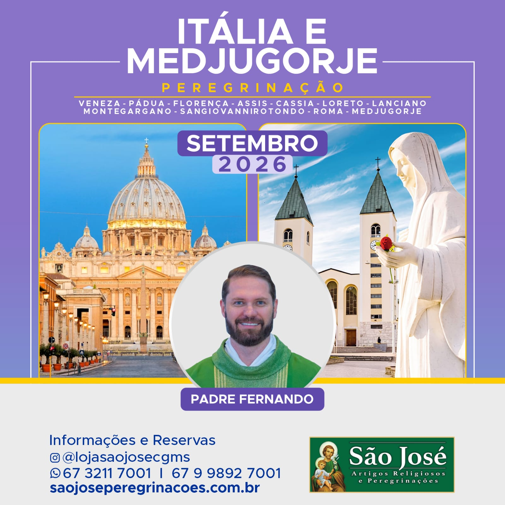

Apresentação no aeroporto de Campo Grande OU SUA CAPITAL com destino São Paulo. A partir de São Paulo, todos os voos e roteiro em grupo.
Chegada. Recepção no aeroporto e traslado ao hotel em Veneza. Chegada no hotel e acomodação e jantar.
Após **café da manhã no hotel, saída para Pádua, visita à Basílica de Santo Antônio (possibilidade de Missa), onde estão suas relíquias e túmulo do Santo. Continuação para Veneza. Saída em Vaporetto para a Ilha de Veneza onde está a bela Praça de São Marcos com grandiosa Catedral e Igreja de São Jeremias, onde está o corpo de Santa Luzia. Tempo livre para descobrir Veneza com suas inúmeras pontes e canais. No final do dia, retorno ao hotel e jantar.
Após **café da manhã no hotel, saída para a região da Toscana, onde está Florença (capital da arte). Chegada e visita panorâmica da cidade: Catedral de Santa Maria da Flor, Batistério com a Porta do Paraíso, Praça da Senhoria, Ponte Velha e Mercado da Palha. Continuação da viagem para a pequena e encantadora cidade de Assis, para conhecer de perto a história de São Francisco e Santa Clara. Acomodação e jantar.
Após **café da manhã no hotel, saída para visitar a Basílica de São Francisco (possibilidade de Missa), Praça da Comuna, Santuário da Espoliação em Assis, onde encontra-se o Corpo do Beato Carlo Acutis, Capela de São Damião, Basílica de Santa Clara e Basílica Santa Maria dos Anjos com a Porciúncula (local do nascimento da ordem Francisca). Retorno para o hotel, e Jantar.
Após *café da manhã no hotel, em horário apropriado, saída para Cássia, cidade natal de Santa Rita, visita ao convento e túmulo de Santa Rita. Em seguida, saída para Loreto. Visita ao Santuário da Santa Casa de Loreto (possibilidade de Missa), que é um lugar de peregrinação católica situado no município italiano de Loreto. Continuação à Ancona e embarque em ferry para Croácia. Jantar *e noite a bordo.
Chegada e desembarque no porto de Split, e traslado de ônibus ao hotel em Medjugorje. Chegada e acomodação. Começo das atividades religiosas. Jantar.
Após Café da manhã no hotel, dia inteiro dedicado às atividades religiosas. Iniciaremos subindo ao Monte das Aparições, onde em 24 de junho de 1981 Nossa Senhora apareceu com um menino nos braços a seis jovens paroquianos e continua aparecendo, dando-nos suas mensagens. Possibilidade de subir ao monte Krizevac (Monte da Cruz). Jantar.
Após café da manhã no hotel, em horário marcado traslado a Split para embarque no ferry noturno com destino a Ancona. Jantar e noite bordo.
Desembarque em Ancona. Em seguida prosseguimento para San Giovanni Rotondo, passando por Lanciano, cidade medieval, onde aconteceu no ano 700 o Primeiro Milagre Eucarístico, visita a Igreja de São Lengoziano (Possibilidade de Santa Missa). Tempo livre. Continuação para San Giovanni Rotondo. Chegada, acomodação no hotel e **jantar.
Após *café da manhã no hotel, saída para visita ao museu e à Igreja antiga. Em seguida visita à nova Basílica e o túmulo de São Pio (Possibilidade de Santa Missa). Em seguida Monte Gargano (local da aparição de São Miguel Arcanjo). Após seguiremos para Roma. Chegada, acomodação e *jantar.
Após café da manhã no hotel, saída para visita panorâmica da “Cidade Eterna, Coliseu (parada para fotos, sem entrada), Foros Romanos (vista externa), Circo Máximo, Praça Veneza, Termas de Caracala, Fontana de Trevi. Na parte da tarde visita as Basílicas de Santa Maria Maior, São João de Latrão e São Paulo Fora dos Muros (Missa). Retorno ao hotel e Jantar.
Após café da manhã no hotel, saída para a Praça de São Pedro para participar do Angelus com o Papa, visita ao interior da Basílica, túmulos papais, Museu do Vaticano e Capela Sistina. Tarde livre. Retorno para o hotel, e jantar.
Café da manhã no hotel e em horário a indicar translado ao aeroporto para retorno ao Brasil.
Em horário a ser informado, voo de conexão para a sua capital.
Fim dos nossos serviços.